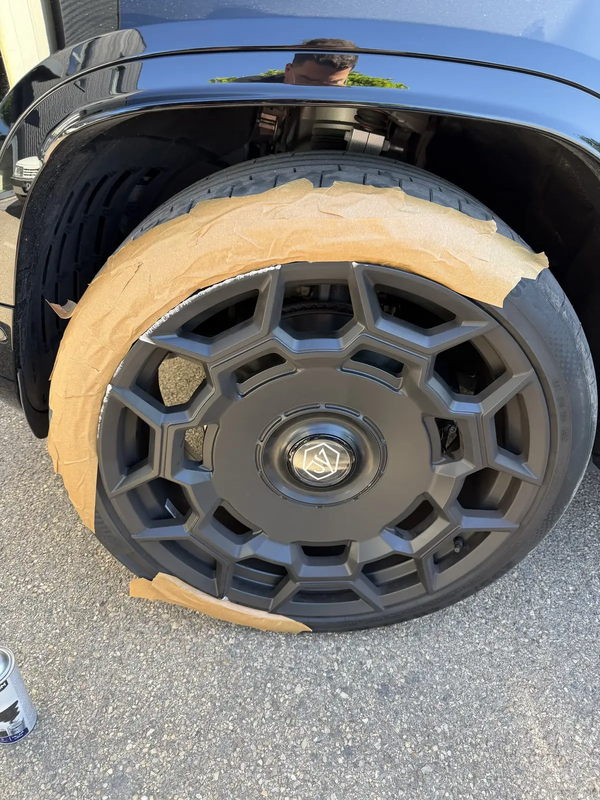
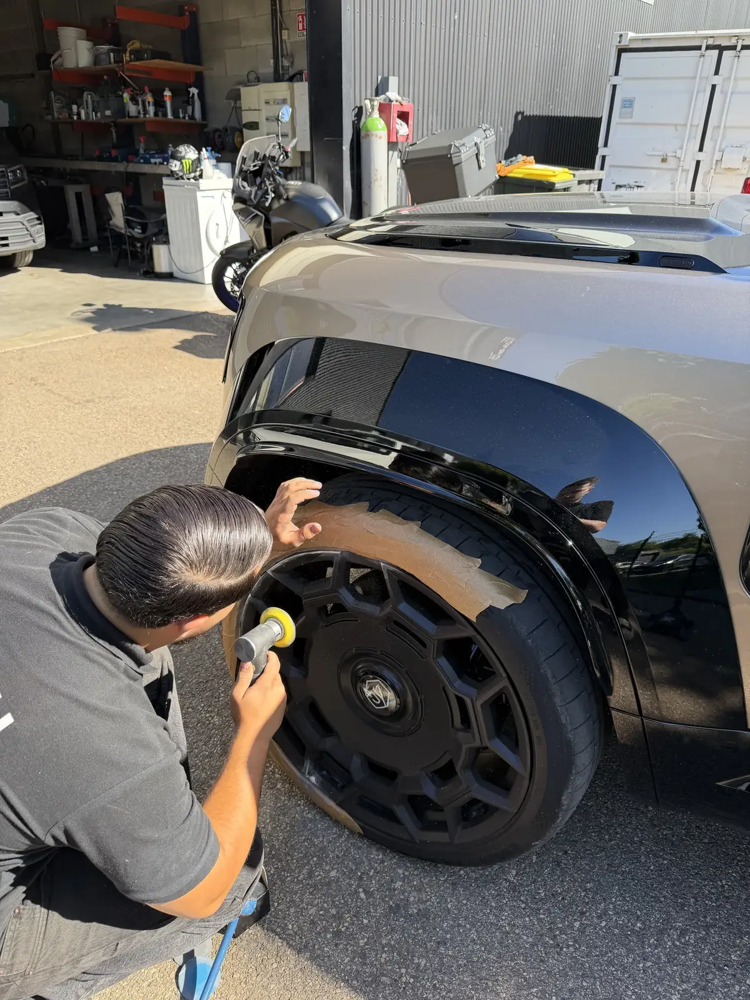
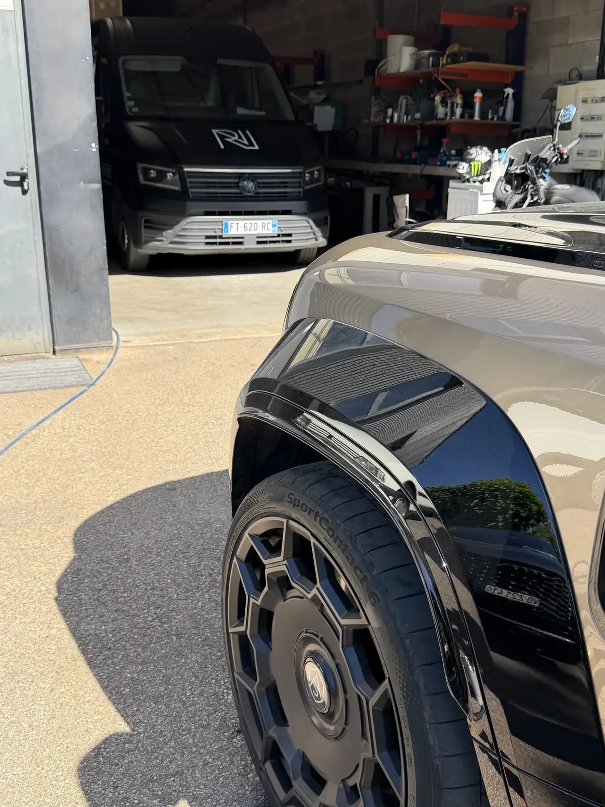

Le Land Rover Defender nouvelle génération est l'un des SUV premium les plus imposants de la route. Ses jantes spécifiques en finition noir mat ou anthracite font partie de son identité — la moindre marque se voit immédiatement.
Un client nous a contacté en urgence : jante abîmée, véhicule à rendre présentable pour le lendemain matin. Sur WhatsApp, on a évalué le dossier en quelques minutes et bloqué un créneau pour le lendemain à 8h.
Étape 1 — Masquage et préparation

Avant toute application, la zone de travail est isolée avec précision : masquage du pneu, protection de la carrosserie. Sur un Defender avec finition noir mat, la moindre projection hors zone serait visible. Cette étape prend du temps — c'est elle qui garantit un résultat net.
La teinte noir mat du Defender ne s'improvise pas : trop brillant, trop froid ou trop chaud, et l'écart avec les trois autres jantes intactes saute aux yeux. On reproduit la teinte par analyse au spectrophotomètre avant d'ouvrir le moindre pot.
Étape 2 — L'intervention en vidéo
Intervention REYNOV — retouche jante Land Rover Defender, Lyon

Le processus complet :
- Ponçage de la zone abîmée — retrait des arêtes vives, préparation de l'adhérence
- Application d'un apprêt sur la zone traitée uniquement
- Masquage précis des zones environnantes
- Reproduction de la teinte noir mat par couches successives
- Vernis mat de protection bi-composant
- Polish de finition pour homogénéiser la surface
Étape 3 — Le résultat

La retouche est invisible. La teinte noir mat correspond parfaitement aux trois autres jantes — le client a récupéré son Defender à 9h le lendemain matin. Résultat validé, véhicule rendu dans les délais.
Ce type d'intervention urgente est possible quand le dommage est localisé et que la finition est dans notre référentiel. Sur WhatsApp, on évalue en quelques minutes si on peut intervenir sous 24h.
Besoin d'une intervention urgente ?
Envoyez une photo sur WhatsApp — on vous dit dans l'heure si une intervention J+1 est possible.
WhatsApp — 06 61 45 35 27Questions fréquentes — intervention urgente sur jantes
Oui, selon la nature du dommage et nos disponibilités. Les retouches localisées (rayure sur la lèvre, frottement limité) se prêtent bien à une intervention express sous 24h. Pour une rénovation complète de plusieurs jantes, il faut compter 48 à 72h minimum. Envoyez vos photos sur WhatsApp pour une évaluation en temps réel.
Une retouche localisée sur jante Defender démarre généralement à partir de 80€ selon l'étendue du dommage. Le devis précis se fait sur photos. Pas de supplément urgence si le créneau est disponible.
Pour les interventions urgentes, on peut se déplacer ou vous demander d'amener la jante directement à notre atelier de La Mulatière (69350) selon la situation. L'atelier garantit les meilleures conditions de séchage pour un résultat optimal dans un délai court.
Oui. On utilise les mêmes matériaux : apprêt professionnel, peinture bi-composant et vernis de protection. La différence porte uniquement sur la zone traitée (localisée vs. complète), pas sur la qualité des produits ou du process.
Le canal le plus rapide est WhatsApp au 06 61 45 35 27 — envoyez vos photos directement, on évalue la faisabilité et on vous répond dans l'heure. Pour une urgence, précisez votre contrainte de délai dès le premier message.
Jante abîmée et délai serré ? Envoyez vos photos sur WhatsApp — on vous dit immédiatement si une intervention express est possible.
→ Voir aussi : Notre prestation rénovation · Rénovation BMW XM Lyon